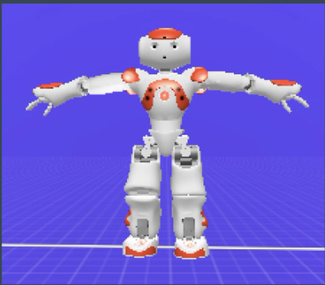
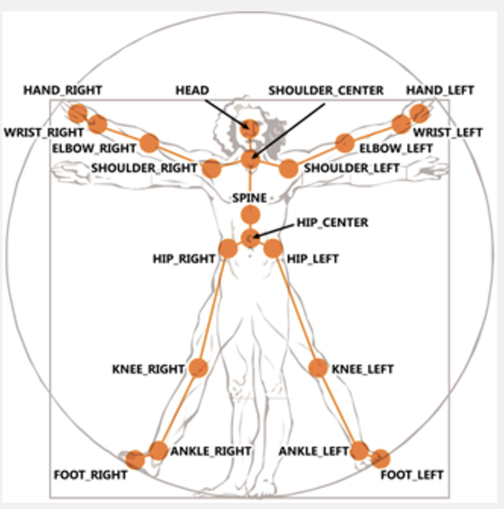
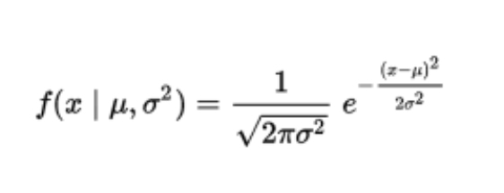
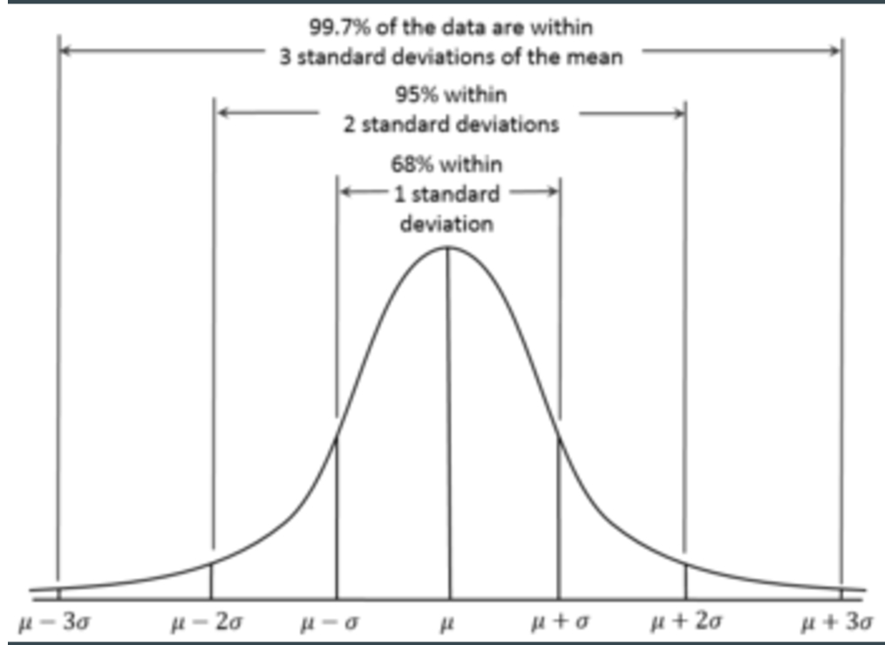
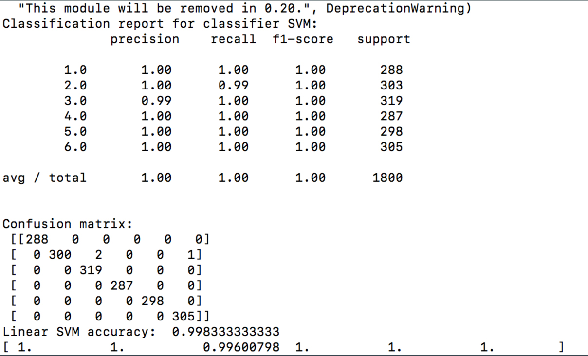
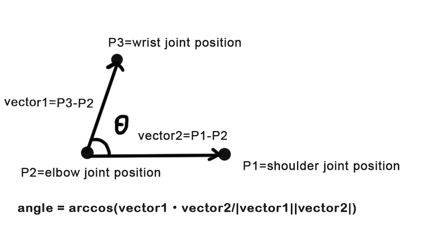

Week 1
Progress
- Webot part: We designed 6 postures but some are too complicated when setting the virtual robot. The adjustable range of angles in choregraphe is too small to achieve some postures, so we need to simplify our postures.
- Pose estimation: We followed the instruction of 2D articulated human pose estimation software. Luckily, the example of human pose estimation works well. However, when we want to dectect upperbody or fullbody to get the bounding box of our dataset, there are some problems with the calvin upper-body detector. The provided voc-release file is too old without maintance. In this case, we have to change our plan.
- Reference:
pose estimation: http://groups.inf.ed.ac.uk/calvin/articulated_human_pose_estimation_code/
body detector:http://groups.inf.ed.ac.uk/calvin/calvin_upperbody_detector/
Issues
MATLAB can’t recognize the complier (Xcode 8.x) on Mac.
1234>> mex -setupError using mexNo supported compiler or SDK was found. For options, visithttp://www.mathworks.com/support/compilers/R2016a/maci64.html.Solution:
The reason could be the sdk for your mac version isn’t linked to MATLAB.- Edit the file: yourMatlabRoot/bin/maci64/mexopts/clang++_maci64.xml
- Edit the file: yourMatlabRoot/bin/maci64/mexopts/clang_maci64.xml
Add following 2 sentences in < ISYSROOT > < SYSROOT > and < SDKVER > < SDKVER >
12<dirExists name="$$/Platforms/MacOSX.platform/Developer/SDKs/MacOSX10.12.sdk" /><cmdReturns name="find $$ -name MacOSX10.12.sdk" />So the code block will look like this:
123456789101112131415161718192021222324252627282930313233<ISYSROOT><and><cmdReturns name="xcode-select -print-path"/><or><dirExists name="$$/Platforms/MacOSX.platform/Developer/SDKs/MacOSX10.9.sdk" /><dirExists name="$$/Platforms/MacOSX.platform/Developer/SDKs/MacOSX10.10.sdk" /><dirExists name="$$/Platforms/MacOSX.platform/Developer/SDKs/MacOSX10.11.sdk" /><dirExists name="$$/Platforms/MacOSX.platform/Developer/SDKs/MacOSX10.12.sdk" /><cmdReturns name="find $$ -name MacOSX10.9.sdk" /><cmdReturns name="find $$ -name MacOSX10.10.sdk" /><cmdReturns name="find $$ -name MacOSX10.11.sdk" /><cmdReturns name="find $$ -name MacOSX10.12.sdk" /></or></and></ISYSROOT><SDKVER><and><and><cmdReturns name="xcode-select -print-path"/><or><dirExists name="$$/Platforms/MacOSX.platform/Developer/SDKs/MacOSX10.9.sdk" /><dirExists name="$$/Platforms/MacOSX.platform/Developer/SDKs/MacOSX10.10.sdk" /><dirExists name="$$/Platforms/MacOSX.platform/Developer/SDKs/MacOSX10.11.sdk" /><dirExists name="$$/Platforms/MacOSX.platform/Developer/SDKs/MacOSX10.12.sdk" /><cmdReturns name="find $$ -name MacOSX10.9.sdk" /><cmdReturns name="find $$ -name MacOSX10.10.sdk" /><cmdReturns name="find $$ -name MacOSX10.11.sdk" /><cmdReturns name="find $$ -name MacOSX10.12.sdk" /></or></and><cmdReturns name="echo $$ | rev | cut -c1-10 | rev | egrep -oh '[0-9]+\.[0-9]+'" /></and></SDKVER>
- Edit the file: yourMatlabRoot/bin/maci64/mexopts/clang++_maci64.xml
Error message in Matlab when using voc-release file: Undefined function ‘resize’ for input arguments of type ‘double’.
12345678910111213Undefined function 'resize' for input arguments of type 'double'.Error in featpyramid (line 22)scaled = resize(im, 1/sc^(i-1));Error in detect (line 69)[feat, scales] = featpyramid(input, model.sbin, interval);Error in DetectStillImage (line 35)boxes = detect(tempimg, pffmodel,det_pars.ubfpff_thresh);Error in DetectAndEstimDir (line 26)detections = DetectStillImage(fullfile(img_dir,Files(idx).name),pffubfmodel_path,facemodel_path,det_pars,verbose);The definition of the function of resize in resize.cc is:
1mxArray *resize(const mxArray *mxsrc, const mxArray *mxscale) {}The input type is mxArrar, not double type. But changing it into double type dosen’t work. No solution now.
Week 2
Progress
Since using MATLAB to extract posture data is infeasible, we decided to work on Kinect to get the skeleton data. We have looked up dozens of documentation and found that MacOS can be connected to Kinect. After fixing a lot of problems when installing the Kinect SDK on Mac, we successfully ran the Kinect. However, we found there is no way to call Pykinect library for programming except using Windows OS. The most ridiculous thing is that all of our group member don’t have Windows laptop. We had no choice but worked on the computer in the laboratory which needed the administrator’s account to install Kinect SDK and other python packages on VS 2013. Due to the above, We wasted lots of time and encountered many problems about pygame enviroment before we can start programming.
Reference:
http://blog.nelga.com/setup-microsoft-kinect-on-mac-os-x-10-9-mavericks/
https://github.com/Microsoft/PTVS/wiki/PyKinect
Issues
Can’t access python environment correctly.
Solution:- Open solution explorer, set the python environment to the right path.
- We recommond to add virtual environment rather than the global environment.
Can’t import pygame and other python package.
Solution:- Download the required packages.
- Open solution explorer.
- Right-click on the Python environment and select Install Python Package.
- Type the full path to the “Search PyPI and installed packages” box.
- Notice: the pip version need to be upgraded to the latest one, or the python package would fail to be installed.
Week 3
Final result
Due to the limitation of devices for developing the project last 2 weeks, we finally borrowed a Windows laptop to code this week. In order to work effienctly, we divided our work into 2 parts, which are training model and matching postures.
Training model:
- Training on our robot’s data.
- 26 attributes (26 flexible angles from choregraphe)
- Using SVM
- Performs very well
- Training on real data
- 11 attributes (8 posture angles and 3 orientations)
- Also very well
- Due to the need of large dataset, we use normal distrubution to generate 6000 simulation data (1000 data for each posture).
- μ = mean (standard)
- σ = standard deviation
- Training Result
- SVM accuracy: 99.83%
- This training is trustable.
- Training on our robot’s data.
Matching posture:
- Obtain skeleton data via Kinect
- Extract joint positions via pykinect library
- Calculate 11 features
- Because the angles extracted from virtual robot is different from real human’s skeleton angles, we decided use real data to train model in order to match the posture easily later.
- 8 skeleton angles – obtained by dot product
- 3 orientations – used for judge the direction of the arms and feet
- Use trained model to test user’s data
- Matching
- Pass: the distance between standard data and test data < criteria
- Fail:
- predicted label is wrong
- predicted label is right but distance does’t meet the criteria
correct posture
Find the maximum angle of error and output the value to instrut user to correct his or her posture.
12345678910err = []max_joint = [ "left elbow", "left shoulder","right elbow", "right shoulder", "left knee", "right knee", "left hip", "right hip", ]distance=numpy.linalg.norm(numpy.array(standardData[posture-1])-numpy.array(testData))for i in range(len(testData)):err1 = abs(standardData[posture-1][i]-testData[i])err.append(err1)max_err = max(err)for i in range(len(testData)):if (max_err == err[i]):print 'the #',max_joint[i], 'error, need to modify', 'Need to modify:', max_err, 'degrees'User performs posture again until passing.
Demo
- Correct posture
- Wrong posture
- Posture needs to be modified